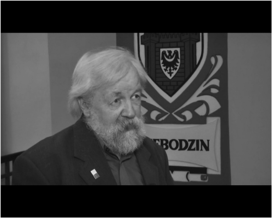

Wydarzenia z życia klubu. Wpisy archiwalne przeniesione ze starej strony.

Odszedł do krainy DX-ów Kazimierz Gancewski SP3SBQ
W świąteczny poniedziałek w godzinach porannych odszedł nasz bliski kolega Kazimierz SP3SBQ — wieloletni dyrektor Świebodzińskiego Domu Kultury, w którym od powstania działa nasz klub.
Zasłużony działacz kultury i animator wielu przedsięwzięć kulturalnych. Autor pięciu książek o Świebodzinie, jego mieszkańcach, zabytkach oraz najbliższej nam historii. Radny miejski i Honorowy Obywatel Gminy Świebodzin. Kolega, który zawsze aktywnie uczestniczył w działaniach klubu, wspierał nas i podsuwał ciekawe pomysły.
Kaziu — będzie nam Ciebie brakowało.
Członkowie klubu SP3PLD · opracował Czesław SP3IBM
Spotkanie wigilijno-noworoczne
Wzorem lat ubiegłych 29 grudnia członkowie klubu spotkali się na corocznym spotkaniu podsumowującym działalność klubu w minionym roku. Gośćmi byli prezes OT 32 PZK Marek SP3AMO oraz Kazimierz Gancewski — radny miejski, członek komisji kultury.
Omówiliśmy osiągnięcia klubu w minionym roku oraz plany na rok 2018. Marek SP3AMO przedstawił bieżącą sytuację w oddziale.
Członkowie mogli też zapoznać się z nowym transceiverem Kenwood TS-990S, zakupionym ze środków Urzędu Miasta i przekazanym klubowi w uznaniu osiągnięć sportowych oraz wieloletniej działalności.
opracował Czesław SP3IBM
„Opowieść eteryczna” — reportaż radiowy
W podróż po radiowych falach zaprosili słuchaczy Cezary Galek wraz z Czesławem SP3IBM, Kazimierzem SP3SBQ i Zdzisławem SP3DUG. Po reportażu słuchacze mogli dzwonić do studia z własnymi przemyśleniami.
Klub SP3PLD jako pierwszy i zarazem jedyny spośród stacji klubowych w Polsce został umieszczony w wykazie DXCC Honor Roll MIXED (ze stanem 335/341).
To szczególne wyróżnienie przyznawane przez amerykańską ARRL świadczy o wieloletniej pracy operatorów klubu w eterze i dobrej koleżeńskiej atmosferze. Dziękujemy wszystkim kolegom za pracę operatorską oraz tym, którzy wsparli finansowo zgłoszenie i weryfikację kart QSL.
Vy 73, Czesław SP3IBM
Szkolenie: obliczanie PEM i systemy antenowe
Dzięki naszej inicjatywie i pomocy zarządu OT 32 PZK 6 marca odbyło się w Świebodzinie szkolenie poświęcone obliczaniu PEM (pola elektromagnetycznego) i wymogom, jakie powinny spełniać amatorskie systemy antenowe.
Szkolenie w całości przeprowadził Dionizy SP6IEQ. Uczestniczyło w nim ok. 40 członków oddziału; odwiedzili nas także koledzy z Nowego Tomyśla.
Nowe pomieszczenia klubu
Nowy rok 2009 przyniósł niezwykle istotne dla nas zmiany. Po 27 latach zajmowania pomieszczeń na poddaszu domu kultury przenieśliśmy się do dwóch nowych pomieszczeń piętro niżej.
2 stycznia 2009 r. powitaliśmy nowy rok już w nowym miejscu. Zdjęcia: Stanisław SP3SUY.